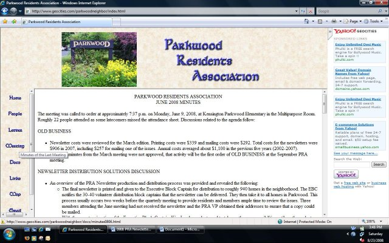

PARKWOOD RESIDENTS ASSOCIATION
FALL 2010 NEWSLETTER
Next Meeting:
Tuesday, September 28, 2010 at 7:30
Kensington Parkwood Elementary School
|
Ladies and Gentlemen: The immense amount of snow delivered one of the most vibrant spring and summer seasons that I have seen in quite a while. The crape myrtle in the Wildwood garden has been blooming for more than two months and is still going strong. Along with that snow, we saw a tremendous amount of rain this summer that created additional challenges for Parkwood and surrounding communities. The hottest meteorological summer on record spawned devastating storms and showed in stark relief the inadequate state of PEPCO’s energy distribution network. The Maryland Public Service Commission launched an investigation into PEPCO’s slow response in August that revealed the power distributor ranks among the lowest 25 percent of companies providing this service to consumers. We’ll have additional information on this topic at the next PRA meeting. With school back in session, we all need to ease up on the accelerator pedal. The recent addition of speed cameras along Cedar Lane by Stoneridge School was done to force motorists to obey the posted speed limit (30 mph) through this school zone. The speed limit drops to 25 mph in both the morning and the afternoon, when students arrive and leave school, respectively. Parkwood is both a residential neighborhood and a school zone. As such, we should all expect that motorists will respect the posted speed limit, stop signs and crosswalks throughout the neighborhood, but especially around Kensington Parkwood Elementary School. Now that the sidewalks have been completed along Franklin Street, (The retaining walls are almost finished.) it has been suggested that the PRA advocate for a three-way stop sign at the intersection of Beach Drive and Franklin Street. This item will be on the agenda on the 28th. In the wake of this past winter’s snows, it became evident that many residents in our neighborhood need assistance when severe weather strikes. It would be laudable if the PRA could organize volunteer teams to assist these residents when we get buried or drowned or broken by severe weather. We’ll have a discussion and look for ideas on the best way to organize this effort at the next meeting. Children learn the importance of volunteerism, when they see their older siblings and parents engage in these activities. The youngest Parkwood volunteers of the last 29 months assisted with the summer weeding of the Wildwood garden. Their curiosity and enthusiasm were contagious. The PRA is always in need of new volunteers. Think about making plans to attend the meeting on the 28th. We hope to see you there.
Bailey Condrey |
| BRAC IMPLEMENTATION COMMITTEE (BIC) |
Ken Hartman, Director of the Bethesda-Chevy Chase Regional Services Center, has offered a proposal to reconstitute the BIC as a Community Liaison Council (CLC) under the auspices of the Western Montgomery Citizens Advisory Board (WMCAB) which meets under the auspices of the Services Center. The BIC’s mandate expires in September 2011. The following objections to this proposal have been floated by the Coalition of Military Medical Center Neighbors, to which Parkwood belongs:
|
POTENTIAL FEDERAL FUNDING FOR BRAC-RELATED TRANSPORTATION PROJECTS (The Final Take Hopefully) |
Last December, Congress approved and the President signed into law, the FY 2010 Defense Appropriations bill. The bill included a $300 million appropriation from the DOD Health Care budget designated for transportation projects around NNMC Bethesda and Fort Belvoir, VA. However, last spring DOD officials reported back to Congress that there was no mechanism in place to disburse funds from the Health Care budget to state and local governments for transportation projects. In short, while the funds were appropriated they couldn’t be spent unless Congress provided a specific workable mechanism to spend them.
In response, Congressman Van Hollen was able to include the $300 million appropriation in the recent Emergency Wartime Supplemental Appropriations bill (HR 4899); this time the funds would be administered through DOD’s Office of Economic Adjustment (OEA) rather than the Health Care budget. OEA is empowered to assist BRAC-impacted communities. The Van Hollen language was part of a series of amendments the House of Representatives attached to a version of HR 4899 that had been approved previously by the Senate. However, there was concern that delays caused by ongoing debate on amendments back-and-forth between the House and Senate could be detrimental to our fighting forces in Afghanistan and Iraq who desperately needed supplemental funding. On July 22nd the Senate refused to accept ANY House amendments and sent their original bill back to the House for quick passage and enactment into law. The Van Hollen language was among many amendments stripped from the bill.
Congressional delegations representing NNMC Bethesda and Fort Belvoir (Maryland Rep. Chris Van Hollen and Senators Barbara Mikulski and Ben Cardin, and Virginia Rep. Jim Moran and Senators Jim Webb and Mark Warner, respectively) focused on including the appropriation in the Fiscal Year 2011 Defense Appropriations bill. On July 27th, the House Defense Appropriations Subcommittee marked-up the FY11 Defense Appropriations bill, and included Van Hollen’s language to appropriate the funds for transportation projects around BRAC-impacted military hospitals. The full House Appropriations Committee and then the full House and Senate should take up the bill after the August recess, and a conference committee should write the final version of the FY2011 Defense Appropriations bill. This bill should be passed and enacted into law by October 1, 2010 – although it must be noted that the previous year’s Defense Appropriations bills were not finished until December rather than October.
AREA SECTOR PLANS UPDATE
White Flint Sector Plan: Through its membership in the Coalition of Kensington Communities (CKC) and the White Flint Community Coalition, the Parkwood Residents Association has been focused on the White Flint Sector Plan since last fall. These groups have met with, and submitted comments to, the members of the County Council and their staff to voice concerns about planned density, traffic impacts, and lack of planned infrastracture and community amenities for current and future residents. As of the time of printing of this newsletter, the Council’s comment period on the Sector Plan had closed and a vote was planned for March 23. The details on the entire plan can be found at: http://www.montgomeryplanning.org/community/whiteflint/
Kensington Sector Plan: In January the CKC testified in support of the Kensington Sector plan. Details on this plan can be found at: http://www.montgomeryplanning.org/community/kensington/index.shtm.
The PRA testimony is available on the PRA website.
|
GREETINGS FROM THE NEW PRA VICE PRESIDENT Dear Neighbors, What a beautiful fall is upon us. I am excited to introduce myself to the PRA community; I am Matt Murton, a Parkwood resident for the past seven years. As a Parkwood homeowner, I enjoy seeing my neighbors and their families taking full advantage of everything our beautiful neighborhood has to offer. We are lucky to live in one of the best located; yet hidden communities in the Metro area. In my professional life I am a REALTOR with Coldwell Banker, my profession and my love of my community has made me prioritize the changes that may affect Parkwood in the future. I currently meet on behalf of Parkwood with the White Flint Community Coalition making sure our voice is heard as we try and stay ahead of this large development plan. I am also concerned with our property values and the effects that infill building can have on our community and prices. I regularly meet with my neighbors to discuss expansion projects and how they could help or hurt their potential resale. When the call for a new VP was cast, I jumped at the opportunity to start giving back to the community that is my home and I am excited to make a positive impact on my community!
If you have any questions or would like to volunteer to help on the WFCC please feel free to email me at
|
Parkwood’s Virtual Community
Get connected on the PRA’s website at www.parkwoodresidents.org! Maintained by PRA webmaster , the website includes a wealth of information about our community and the PRA, including contact information for local officials, minutes from past PRA meetings, past issues of the newsletter,  maps of recent crimes in the community, and other great resources. For example, if you missed the last PRA meeting and want to see what happened, click on "Meetings" on the left side of the PRA website and read the meeting minutes!
Half of Parkwood households are connected to each other via the PRA listserv on Yahoo! groups.
This e-mail group is open to all residents of Parkwood, and a great way to plan community events, such as block parties and playgroups, and share information, such as referrals for service providers or the latest news about vandalism or thefts affecting our neighborhood. To subscribe, send a blank message to:
parkwoodresidents-subscribe@yahoogroups.com.
You will receive a confirmation message when you are subscribed. Do not write anything in the subject or body of the message. It will not be seen by anyone and you will not get a response. This listserv can save the PRA funds and make Parkwood a safer place to live! Sign on to the list serve and get your neighbor to as well!
[webmaster note: the listserv is administered by
.]
2010 Membership/Renewal Application – Annual Dues per household: $10
Please mail or deliver your 2010 PRA membership renewal dues to: Kitty Stone, 4313 Clearbrook Lane, Kensington, MD 20895. Please make check payable to: Parkwood Residents Association and print your information below:
Name: _________________________________________
Address: __________________________________________________________________
Phone Numbers: (daytime) ____________________________ (evening) _____________________
Email: _________________________________ Member of PRA Listserv? ( Yes / No ) (not required for PRA membership)
Enclosed:
____ $10 membership dues
____ $______ donation to Beautification Committee (optional)
Connect with your neighbors at
www.parkwoodresidents.org and
ParkwoodResidents@yahoogroups.com
Displayed with 100% Recycled Electrons
| [Parkwood Home] | [Printable Page] | [Print] |

 , I look forward to meeting more of my neighbors!
, I look forward to meeting more of my neighbors!